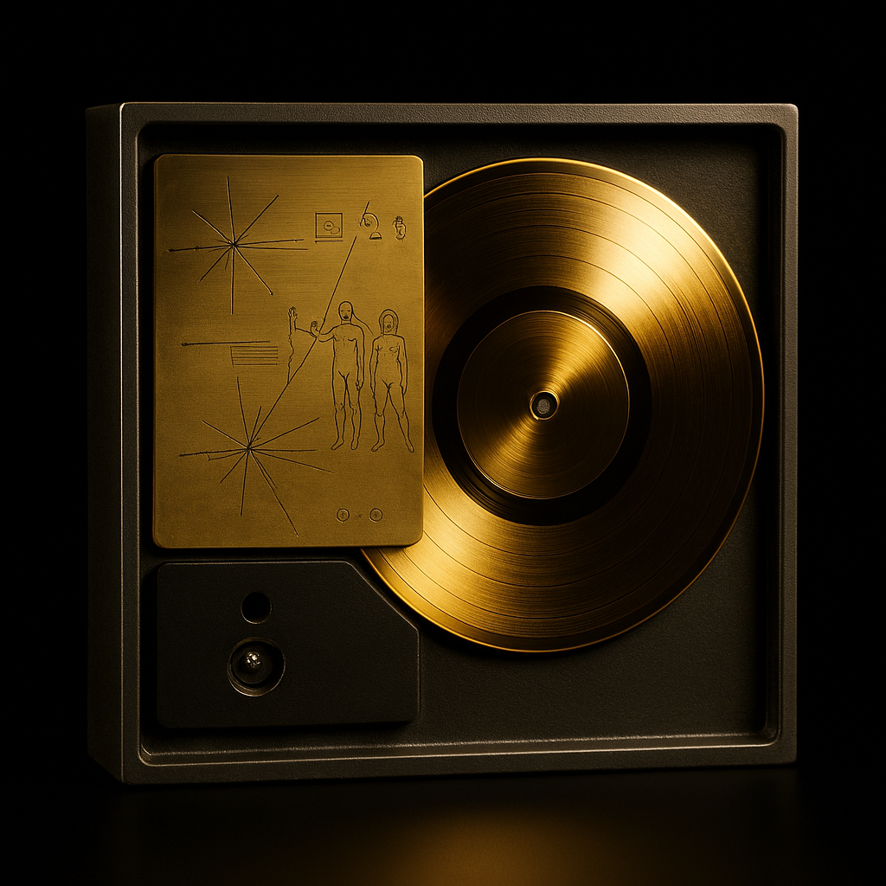

Voyager 2
Agencia: NASA
Fecha de lanzamiento: 20 de agosto de 1977
Duración: Activa (más de 45 años)
Tipo de misión: Exploración interestelar
Objetivo: Estudio de los planetas exteriores del Sistema Solar y más allá
Carga científica: Instrumentos para medir campos magnéticos, partículas solares, plasma, rayos cósmicos y cámaras para captura de imágenes planetarias
Impacto histórico
Fue la primera y única nave que sobrevoló los cuatro gigantes exteriores: Júpiter, Saturno, Urano y Neptuno. Realizó descubrimientos clave como el campo magnético inclinado de Urano, la Gran Mancha Oscura de Neptuno y anillos previamente desconocidos. Su legado incluye haber expandido enormemente el conocimiento de la dinámica planetaria y del entorno interestelar.
Mensaje interestelar
Al igual que su gemela Voyager 1, lleva el famoso Disco Dorado, una cápsula fonográfica con sonidos, imágenes y mensajes de la humanidad. Contiene saludos en 55 idiomas, música de diversas culturas y diagramas científicos. Diseñado por Carl Sagan y su equipo, el disco es una “botella al océano cósmico”, destinada a posibles civilizaciones extraterrestres.
